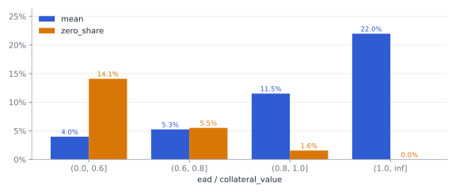

LGD and EAD#
When a borrower defaults, the bank loses the part of the exposure that the workout does not recover. The loss given default (LGD) is that loss as a share of the exposure at default (EAD), and for a credit line the EAD includes what the borrower draws between a reference date and the default, which the credit conversion factor (CCF) measures. With the PD, the LGD and the EAD make up the expected loss and the capital requirement of each exposure.
The PDs come from Calibration, the previous guide, the expected loss that the three parameters give is that of Credit strategy, the next guide, Model validation back-tests LGD and CCF estimates as supervisors ask, and Regulatory capital turns them into the capital requirement. workout_lgd() gives the realized LGD of each defaulted loan from the cash flows of its workout, and conversion_factor() the realized CCF of each credit line. lgd_table() summarizes realized LGDs by group, variance_edges() fits the bins of a driver to them, and fractional_regression() models them on several drivers at once.
Definitions#
A workout recovers money from a defaulted loan, through repayments, the sale of collateral or a cure, and costs money, such as legal fees. A flow of amount \(a_j\) on the date \(t_j\), positive for a recovery and negative for a cost, is discounted at the annual rate \(r\) to the date of default \(t_D\), with the days counted ACT/365:
With \(R\) the sum of the present values of the recoveries and \(C\) that of the costs, as a positive amount, the realized LGD is the economic loss as a share of the exposure at default:
A credit line with the limit \(L\) and the amount \(D\) drawn at the reference date, and the amount \(E\) drawn at default, has the realized CCF
the share of its undrawn part that was drawn by the time of default. Neither measure is clipped: recoveries above the exposure give a negative LGD, costs above the recoveries an LGD above 1, a repayment after the reference date a negative CCF and a limit raised after it a CCF above 1.
A worked example#
Three loans defaulted on 1 January 2023, and their workouts are discounted at 10% a year. Loan A recovers 55 and costs 11 a year after default, loan B recovers its exposure on the day of default after a legal cost of 5 a year before, and loan C has no flows yet:
>>> from kivi.lgd import workout_lgd
>>> workout_lgd(
... ["A", "B", "C"],
... ["2023-01-01"] * 3,
... [100.0, 200.0, 50.0],
... ["A", "A", "B", "B"],
... ["2024-01-01", "2024-01-01", "2022-01-01", "2023-01-01"],
... [55.0, -11.0, -5.0, 200.0],
... rate=0.1,
... ).round(4)
ead recovery cost lgd
loan
A 100.0 50.0 10.0 0.6000
B 200.0 200.0 5.5 0.0275
C 50.0 0.0 0.0 1.0000
A year after default, the flows of loan A are worth 55 / 1.1 = 50 and 11 / 1.1 = 10, so it lost 100 + 10 − 50 = 60 of its exposure of 100. The cost of loan B a year before default is compounded to 5 × 1.1 = 5.5, so B lost 5.5 of 200 although it recovered its exposure. Loan C has an LGD of 1 because nothing has been recovered yet, which is its realized LGD only if its workout has closed.
Workout LGD#
The defaulted loans come as one table with a row per loan, and the cash flows of their workouts as another with a row per flow, as a bank’s systems record them. make_defaults() and make_recoveries() simulate such tables, which Example data describes. Each loan has its own discount_rate, the money-market rate of its month of default plus 5 percentage points as paragraph 143 of the EBA’s guidelines asks, so it is passed as rate:
>>> import numpy as np
>>> import pandas as pd
>>> from kivi.datasets import make_defaults, make_recoveries
>>> defaults = make_defaults(rng=0)
>>> flows = make_recoveries(defaults, rng=0)
>>> result = workout_lgd(
... defaults["loan_id"],
... defaults["default_date"],
... defaults["ead"],
... flows["loan_id"],
... flows["date"],
... flows["amount"],
... rate=defaults["discount_rate"],
... )
>>> result.head().round(4)
ead recovery cost lgd
loan
1 307147.39 221340.3613 9282.0042 0.3096
2 2471.68 392.8536 190.9515 0.9183
3 23456.26 22385.7845 26.7730 0.0468
4 14235.26 2049.2144 508.3363 0.8918
5 7642.49 227.7722 236.7750 1.0012
These are the LGDs that Example data computes with pandas, flow by flow. The secured loan 1 sold its collateral after a year and a half, the unsecured loan 3 cured, and the costs of loan 5 exceeded its recoveries, so it lost more than its exposure. The legal costs that 101 loans paid before their default count compounded to the date of default.
Closed workouts#
workout_lgd() does not know whether a workout has ended and gives the loss of the flows so far. The realized LGD exists only for a closed workout: the long-run average and the back-tests use the defaults whose recovery process has closed, by the bank’s definition of its end, and leave out the expected future recoveries of the others. Here the workouts with a closing_date have closed:
>>> loans = defaults.set_index("loan_id")
>>> closed = loans["closing_date"].notna()
>>> int(closed.sum()), int((~closed).sum())
(1722, 278)
The open workouts still count in the long-run average of the regulations, which adjusts for them; kivi leaves that adjustment to the bank’s own estimate of the future recoveries.
Drawings, write-offs and cures#
The flows and the exposure are the caller’s to choose, and the EBA’s guidelines say how:
A cure returns the loan to performing. It counts as a recovery of the amount outstanding on the date of the cure, as the flows of
kind"cure"of the simulated data do.An amount written off at or before default belongs in the exposure, so that it counts in the loss and in the EAD alike.
Interest and fees capitalized after default are not flows, but their recoveries are.
A drawing after default is a negative flow, like a cost, so that it counts in the loss. Where the CCF includes the drawings, the EBA counts them in the exposure as well. Then add their present value to
eadinstead of passing them as flows, because the exposure counts in the loss too.
A credit line with an exposure of 10,000 at default drew 2,000 two months later and recovered 9,000 after a year. As a flow, the drawing raises the loss:
>>> line = {"loan": [7], "default_date": ["2023-03-01"]}
>>> workout_lgd(
... *line.values(), [10_000.0], [7, 7], ["2023-05-01", "2024-02-29"], [-2_000.0, 9_000.0],
... rate=0.06,
... ).round(4)
ead recovery cost lgd
loan
7 10000.0 8490.566 1980.6183 0.349
Where the CCF includes it, the present value of the drawing, the cost of a call with the drawing alone, moves to the exposure:
>>> drawing = workout_lgd(*line.values(), [10_000.0], [7], ["2023-05-01"], [-2_000.0], rate=0.06)
>>> ead = 10_000.0 + drawing["cost"].to_numpy()
>>> workout_lgd(*line.values(), ead, [7], ["2024-02-29"], [9_000.0], rate=0.06).round(4)
ead recovery cost lgd
loan
7 11980.6183 8490.566 0.0 0.2913
The drawing still counts once in the loss, and now also in the exposure, so the LGD falls from 0.349 to 0.2913.
Credit conversion factors#
The CCF of a defaulted credit line compares the amount drawn at default with the limit and the amount drawn at a reference date. The regulations take the reference date 12 months before default, the fixed-horizon approach, and the limit at that date, the larger of the advised and the unadvised limit; a limit raised later stays out of the denominator. The revolving lines of the simulated defaults have their limit and drawn amount of that date:
>>> from kivi.lgd import conversion_factor
>>> revolving = loans[loans["segment"] == "revolving"]
>>> ccf = conversion_factor(revolving["ead"], revolving["drawn"], revolving["limit"])
>>> ccf.describe().round(3)
count 464.000
mean 0.553
std 0.707
min -3.263
25% 0.291
50% 0.554
75% 0.823
max 9.332
Name: ccf, dtype: float64
The median line drew 55% of its undrawn limit by default. A negative CCF comes from a line that repaid part of its balance before default, and a CCF above 1 from a line that ended above its limit. The 25 other lines were fully drawn or overdrawn at the reference date, so they have no undrawn part and no CCF: the formula would divide by 0, or by a negative amount and reverse the sign. The EBA’s consultation on CCF estimation measures such lines by the amount drawn at default over the limit, and the ECB’s validation report back-tests their EAD instead of a CCF:
>>> fully_drawn = revolving["limit"] <= revolving["drawn"]
>>> int(fully_drawn.sum())
25
>>> print(round((revolving["ead"] / revolving["limit"])[fully_drawn].median(), 4))
1.0943
A negative CCF still ranks the risk of the lines, but the quantification of the CRR3 counts it as 0, and no CCF may be capped at 1. lgd_table(), whose floor of 0 does just that, gives the CCFs by the usage of the lines at the reference date:
>>> from kivi.lgd import lgd_table
>>> undrawn = ccf.notna()
>>> usage = pd.cut(revolving["drawn"] / revolving["limit"], [0, 0.5, 0.75, 1])[undrawn]
>>> lgd_table(usage, ccf[undrawn])[["total", "mean", "zero_share", "full_share"]].round(3)
total mean zero_share full_share
bin
(0.0, 0.5] 138 0.582 0.094 0.109
(0.5, 0.75] 203 0.555 0.103 0.084
(0.75, 1.0] 123 0.719 0.073 0.106
The lines that had drawn more than three quarters of their limit by the reference date drew more of what was left.
LGD tables#
lgd_table() summarizes the realized LGDs of each group: the number of defaults, the average LGD, its standard deviation, its range and the shares of defaults without loss and with a total loss. The average counts every default once, as the regulations ask of the long-run average LGD, and negative LGDs count as 0 by default. The closed workouts by segment:
>>> realized = result[closed]
>>> table = lgd_table(loans.loc[closed, "segment"], realized["lgd"])
>>> table.drop(columns="total_share").round(4)
total mean std min max zero_share full_share
bin
secured 704 0.0957 0.1176 0.0000 0.6555 0.054 0.0000
unsecured 580 0.7773 0.2961 0.0136 1.2490 0.000 0.1190
revolving 438 0.6853 0.3512 0.0120 1.3985 0.000 0.1142

Realized LGDs of the closed workouts by segment, before the floor. The secured loans lose little, while the unsecured loans and revolving lines either cure, near 0, or lose most of their exposure, some of them more than all of it.#
The LGDs of the unsecured loans and revolving lines are bimodal, with the cures near 0 and the liquidations near 1, while most secured loans lose less than 10%. zero_share holds the 38 secured loans whose collateral covered more than their exposure, which floor=None keeps negative; these values still tell the drivers of the loss apart:
>>> lgd_table(loans.loc[closed, "segment"], realized["lgd"], floor=None)[["mean", "min"]].round(4)
mean min
bin
secured 0.0941 -0.0950
unsecured 0.7773 0.0136
revolving 0.6853 0.0120
The table works like woe_table() for a continuous target: pass the bins of a driver, such as the loan-to-value ratio of the secured loans, to see how the average LGD changes from bin to bin. The bins may also come from bin_edges() and cut():
>>> secured = closed & (loans["segment"] == "secured")
>>> ltv = pd.cut((loans["ead"] / loans["collateral_value"])[secured], [0, 0.6, 0.8, 1, np.inf])
>>> lgd_table(ltv, realized.loc[secured[closed], "lgd"])[["total", "mean", "zero_share"]].round(3)
total mean zero_share
bin
(0.0, 0.6] 156 0.040 0.141
(0.6, 0.8] 235 0.053 0.055
(0.8, 1.0] 191 0.115 0.016
(1.0, inf] 122 0.220 0.000

Mean LGD and share of loans without loss of the closed secured workouts by loan-to-value band. The mean rises from 4% to 22% as the collateral covers less of the exposure, and the loans without loss vanish.#
The loans that owe more than their collateral is worth lose five times as much as those with a loan-to-value ratio of 60% or less.
Bands of a driver fitted to the LGDs#
The four bands above are a judgement. variance_edges() fits the bands to the LGDs instead: of the merges of 20 quantile bins of the ratio, it returns the bins whose mean LGDs explain the largest share of the variance of the LGDs, with at least 5% of the loans in each bin and a mean that rises, or falls, from bin to bin. Floor the LGDs at 0 first, as lgd_table() does, so that the bands are fitted to the LGDs that the table averages:
>>> from kivi.binning import cut, variance_edges
>>> ratio = (loans["ead"] / loans["collateral_value"])[secured]
>>> secured_lgd = realized.loc[secured[closed], "lgd"].clip(lower=0)
>>> edges = variance_edges(ratio, secured_lgd)
>>> edges.round(3)
array([ -inf, 0.76 , 0.897, 0.972, 1.189, inf])
>>> fitted = lgd_table(cut(ratio, edges), secured_lgd)
>>> fitted[["total", "mean", "std", "zero_share"]].round(3)
total mean std zero_share
bin
(-inf, 0.76] 352 0.044 0.048 0.091
(0.76, 0.897] 141 0.086 0.082 0.043
(0.897, 0.972] 70 0.131 0.117 0.000
(0.972, 1.189] 105 0.203 0.145 0.000
(1.189, inf] 36 0.253 0.221 0.000
The mean LGD rises from 4% to 25%, and the fitted bands put a cut near a ratio of 1, where the collateral stops covering the exposure. They explain more of the variance of the LGDs than the four fixed bands:
>>> def explained(groups):
... means = secured_lgd.groupby(groups.cat.codes).transform("mean")
... squares = ((secured_lgd - means) ** 2).sum()
... return 1 - squares / ((secured_lgd - secured_lgd.mean()) ** 2).sum()
>>> print(f"{explained(cut(ratio, edges)):.3f} {explained(ltv):.3f}")
0.321 0.295
As with the information value of a binary target, the share explained on the loans that fitted the bands is optimistic; check the bands on later defaults before using them. max_bins, min_bin_share and trend work as in optimal_edges(), and a special code of the driver gets a group of its own from cut().
Fractional regression#
fractional_regression() models the mean LGD on several drivers at once with the fractional logit of Papke and Wooldridge:
The response must lie between 0 and 1, with 0 and 1 included, so cap the LGDs at 1 and floor them at 0 first. The coefficients maximize the same likelihood as logistic_regression() and are read in the same way: a positive coefficient raises the mean LGD. The standard errors are robust, because the variance of a fractional response around its mean is not that of a binary one. A model of the closed workouts of the loans that defaulted from 2018 to 2020, on the segment and the coverage of the exposure by collateral:
>>> from kivi.lgd import fractional_regression
>>> features = pd.DataFrame(
... {
... "unsecured": (loans["segment"] == "unsecured").astype(int),
... "revolving": (loans["segment"] == "revolving").astype(int),
... "coverage": loans["collateral_value"] / loans["ead"],
... }
... )
>>> response = result["lgd"].clip(0, 1)
>>> development = closed & (loans["default_date"] < "2021-01-01")
>>> model = fractional_regression(features[development], response[development])
>>> model.round(4)
coef se z p_value
variable
intercept 0.1951 0.3182 0.6131 0.5398
unsecured 1.1444 0.3345 3.4214 0.0006
revolving 0.8236 0.3345 2.4621 0.0138
coverage -1.9216 0.2479 -7.7513 0.0000
Collateral lowers the LGD, and an unsecured loan loses more than a revolving line. The fitted mean LGD of each loan follows from the coefficients, and on the development sample the fitted means average to its mean LGD, as the means of a logit with an intercept do:
>>> eta = model.loc["intercept", "coef"] + sum(
... model.loc[column, "coef"] * features[column] for column in features
... )
>>> estimated = 1 / (1 + np.exp(-eta))
>>> print(f"{estimated[development].mean():.4f} {response[development].mean():.4f}")
0.4840 0.4840
Back-testing#
LGD and CCF estimates are back-tested against the realized values of closed workouts with the t-test of backtest_table(), and their ranking is measured with the generalized AUC of generalized_auc(), as the ECB’s validation report asks. The closed workouts of the loans that defaulted from 2021 on validate the model:
>>> from kivi.calibration import backtest_table
>>> validation = closed & (loans["default_date"] >= "2021-01-01")
>>> backtest_table(
... loans.loc[validation, "segment"], result.loc[validation, "lgd"], estimated[validation]
... ).round(4)
total estimated realized difference variance statistic p_value
bin
secured 364 0.0940 0.0920 -0.0020 0.0099 -0.3807 0.6482
unsecured 329 0.7924 0.7633 -0.0291 0.0979 -1.6891 0.9539
revolving 224 0.7347 0.6324 -0.1023 0.1493 -3.9646 1.0000
No segment rejects the estimates, whose p-values test whether they are too low, but the revolving lines realize 10 points less than estimated. The recent defaults that have closed are the short workouts, since the long ones are still open, and a quarter of the closed revolving lines of 2021 to 2024 cured, against an eighth of those of 2018 to 2020. This is why the long-run average adjusts for the open workouts.
The gAUC compares the ranking of the estimates with that of the realized LGDs in the twelve LGD segments of the report, with the realized LGDs floored at 0 so that every one falls into a segment:
>>> from kivi.metrics import generalized_auc
>>> segments = [0, 0.05, 0.1, 0.2, 0.3, 0.4, 0.5, 0.6, 0.7, 0.8, 0.9, 1, np.inf]
>>> estimated_segment = pd.cut(estimated[validation], segments, right=False)
>>> realized_segment = pd.cut(result.loc[validation, "lgd"].clip(lower=0), segments, right=False)
>>> generalized_auc(estimated_segment, realized_segment).round(4)
estimate se lower upper
statistic
gauc 0.8384 0.0098 0.8191 0.8576
somers_d 0.6767 0.0196 0.6383 0.7152
Model validation explains the tests and the segments of the report, and the comparison of the gAUC with that of the initial validation. Back-test realized CCFs in the same way, and the EAD of the fully drawn lines with the amount drawn at default as the realized value.
Rules of Basel, the EBA and China#
The functions compute realized values and leave the rules around them to the caller: which defaults count, the discount rate, the floors of the estimates. The tables list the rules of the Basel framework (the CRE chapters in force since 1 January 2023), of the EBA’s guidelines on PD and LGD estimation (EBA/GL/2017/16) and of the CRR3 (Regulation (EU) 2024/1623) next to those of China’s Rules on capital management of commercial banks (NFRA order 2023 No. 4), with the paragraphs and articles that state them.
Rule |
Basel and EBA |
China, 2023 rules |
In kivi |
|---|---|---|---|
Realized LGD |
The economic loss over the amount outstanding at default (EBA 131): the amount outstanding plus material direct and indirect costs, minus the recoveries discounted to the date of default (EBA 132), also recoveries of unknown origin (EBA 133). The loss is economic, not accounting, with material discount effects and costs (CRE36.76). |
The loss over the exposure of the defaulted facility (annex 5, part VI(4) 1), which includes principal and accrued unpaid interest and fees; an economic loss with direct and indirect costs (VI(4) 2). |
|
Discount rate |
The 3-month EURIBOR at the date of default, or a comparable liquid rate of the currency, plus 5 percentage points, for recoveries, costs and drawings (EBA 143), so it differs with the date of default and the currency. |
A rate that reflects the cost of holding the defaulted asset during the workout, with a risk premium for uncertain recoveries and the risk-free rate for certain ones (VI(4) 2(3)). |
|
Day count |
Not specified. |
Not specified. |
ACT/365 |
Costs before default |
Material workout costs before default count, unless already in the amount outstanding or from an earlier default (EBA 144–146). |
No specific rule. |
Compounded to the date of default |
Drawings after default |
Count in the loss (EBA 142), and in the exposure where the CCF includes them (EBA 140), which retail exposures without that treatment leave out (EBA 141). |
No specific rule. |
Negative flows, or their present value in |
Interest and fees capitalized after default |
Do not add to the loss; their recoveries count (EBA 137–138). |
No specific rule. |
Leave them out of the flows |
Write-offs |
Amounts written off at or before default are added to the amount outstanding, in the loss and in the exposure (EBA 134). |
No specific rule. |
Add them to |
Cures |
A recovery of the amount outstanding on the date of the cure, discounted like the others; multiple defaults count from the first (EBA 135). |
Not covered by annex 5. |
A recovery on the date of the cure |
Open workouts |
The observed average uses closed workouts only, without expected future recoveries (EBA 154; closure as in EBA 157); the long-run average adjusts for open workouts (EBA 158), and no default of the period may be left out (EBA 163). The ECB back-tests closed workouts (sections 2.3(i) and 2.6.1(d) of its instructions). |
The bank sets and documents when the recovery is complete (VI(4) 7). |
Select the closed workouts first |
Long-run average |
The arithmetic average over defaults (EBA 150), not over years; retail may weight recent data more (EBA 150–152). The long-run default-weighted average (CRE36.83, CRE36.81). |
At least the long-run default-weighted average loss rate (VI(4) 4). |
|
Negative LGDs and LGDs above 100% |
Negative realized LGDs count as 0 one by one in the observed and long-run averages, while the unclipped values may serve the risk differentiation (EBA 160); values far above 100% are kept and investigated or segmented (EBA 162). |
Samples below 0 count as 0 (VI(4) 15). |
Not clipped by |
LGD floors |
Apply to the estimates, not to realized LGDs: 25% for unsecured corporate exposures, 5% for residential mortgages, 50% for QRRE and 30% for other unsecured retail exposures (CRE32.16, CRE32.58–59). |
The same, except 10% for residential mortgages (article 92). |
Applied by the caller, such as |
Rule |
Basel and EU |
China, 2023 rules |
In kivi |
|---|---|---|---|
Own CCF estimates |
Only for undrawn revolving commitments whose standardized CCF is below 100% (CRE32.36, for retail CRE32.63; CRR3 article 166(8b)). |
Revolving off-balance-sheet items; other items take the CCFs of article 82, and 100% stays 100% (article 93(3) and (4)). |
Not checked |
EAD floor |
The on-balance-sheet amount plus 50% of the off-balance-sheet amount at its standardized CCF (CRE32.36, for retail CRE32.64; CRR3 article 166(8c), except central governments). |
For corporate exposures, the larger of the internal estimate and that sum (article 93(3)); no floor for retail exposures (article 93(4)), unlike Basel. |
Applied by the caller |
Reference date |
The 12-month fixed horizon: the characteristics of the borrower and the facility 12 months before default (CRE36.93; CRR3 article 182(1)(g); EBA/CP/2025/10 paragraph 59). A default within 12 months of origination takes the earliest date with a strictly positive undrawn amount (EBA/CP/2025/10 paragraph 60). |
The 12-month fixed horizon, or another method shown to be prudent (annex 5, part VI(5) 12). |
|
Realized CCF |
The drawn amount at default minus that at the reference date, over the limit minus the drawn amount at the reference date (CRE36.95, footnote; EBA/CP/2025/10 paragraph 61(a)); the ECB uses the definition of the bank’s model (section 2.9.1(b)). |
The same, with the default-weighted long-run average (VI(5) 3). |
|
Limit |
The larger of the advised and the unadvised limit (CRR article 4(1)(56)); a later increase stays out of the denominator, so a CCF of 200% is possible (EBA/CP/2025/10 example 3). |
No specific rule. |
|
Fully drawn or overdrawn lines |
From a usage of 100%, the drawn amount at default over the limit at the reference date (EBA/CP/2025/10 paragraph 61(b)), or a threshold that the bank sets (paragraphs 61(c) and 73); the factor is unstable near full usage (CRE36.95). The ECB back-tests the EAD of facilities with an EAD approach instead of a CCF (sections 2.9.1(g) and 2.9.3). |
The instability of the factor near full usage needs attention (VI(5) 14). |
NaN; |
Negative CCFs |
Count as 0 in the quantification, while the unclipped values may serve the risk differentiation (CRR3 article 182(1); EBA/CP/2025/10 paragraph 99); the ECB reports the share of clipped values. |
No specific rule. |
Not clipped; |
Cap |
No cap at 100%, and no capped reference data (CRE36.95–96; CRR3 article 182(1d); EBA/CP/2025/10 background, paragraph 22). |
No cap at the principal (VI(5) 15). |
Not capped |
CCFs of the foundation approach |
Those of the standardized approach: 100%, 50%, 40% for commitments, 20% and 10% for unconditionally cancellable commitments (CRE32.33, CRE20.95–100); 75% was the earlier value. |
Those of article 82 (article 93(2)): 100%, 40% for loan commitments (10% if unconditionally cancellable), 40% or 20% for unused credit card lines and 50% for NIFs and RUFs. |
Not computed |
The EBA consultation on CCF estimation, EBA/CP/2025/10 of 2 July 2025, was not final when kivi 1.6 was written; article 182(5) of the CRR3 asks for the final guidelines by the end of 2026.
Missing values#
workout_lgd() raises an error for a missing loan, date, exposure, amount or rate, because each decides a loss: a loan without flows is not missing but has recovered nothing. conversion_factor() gives NaN for a missing amount, so a portfolio with gaps keeps its shape. lgd_table() raises an error for a missing LGD and counts missing groups as a group of their own, and fractional_regression() raises an error for missing drivers or responses.
Sample weights#
lgd_table() and fractional_regression() take frequency weights: integer weights give the same table, estimates and standard errors as repeating the rows. The long-run average of the regulations counts every default once, so weighting the defaults by their exposure gives an exposure-weighted average LGD, which is a different measure. Use weights that count defaults, such as the inverse of a sampling rate, and expect the standard errors of the regression to be too small with them, as in logistic_regression().
Limits#
The realized LGD of an open workout is the loss so far. kivi does not estimate the future recoveries of open workouts, the adjustment of the long-run average for them, the LGD in-default or the ELBE.
The downturn LGD, the margin of conservatism and the LGD and EAD floors of the estimates are the bank’s to apply.
conversion_factor()leaves out the factor of fully drawn lines of the EBA’s consultation, which was not final, andworkout_lgd()does not tell flow kinds apart, so the adjustment of the exposure for drawings is a second call, as shown above.The fractional logit models the mean LGD. Bimodal LGDs, with many cures and total losses, are often modelled in two stages, such as a logistic regression of a cure and a fractional regression of the loss without one, which combine the existing functions.
Errors and warnings#
A recovery before the date of default. A repayment before default is not part of the workout; check the dates, or count the payment in the exposure.
A flow of a loan that is not in loan. Every flow must belong to one of the defaulted loans, each listed once.
A response outside [0, 1]. Floor the realized LGDs at 0 and cap them at 1 before
fractional_regression().SeparationError. A driver separates the losses of 0 from the losses of 1 while no loss in between bounds its coefficient, such as a segment in which every loan lost everything. Merge the segment with a neighbour or leave the driver out.
RuntimeWarning: fractional regression did not converge. The fit stopped after 100 iterations; check the drivers for extreme values.